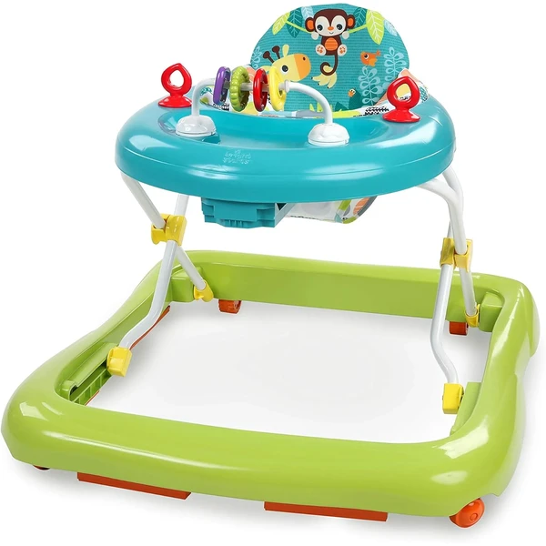
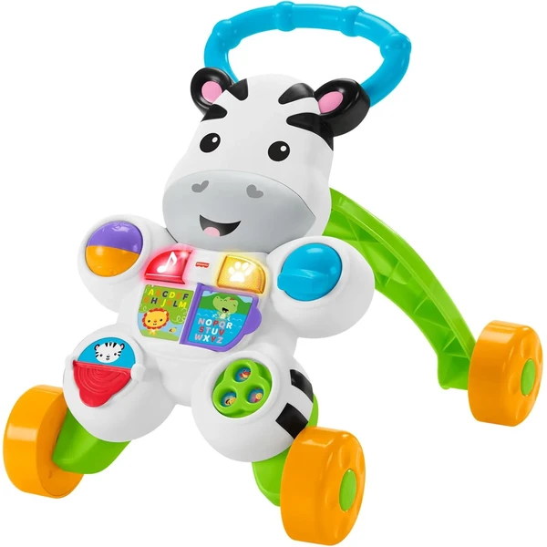
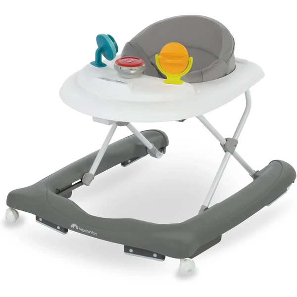
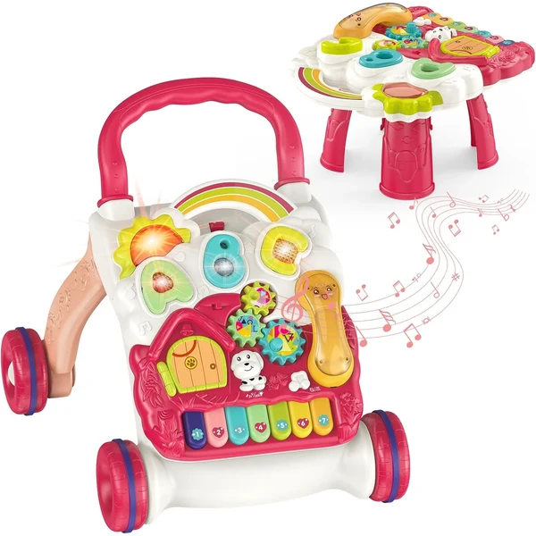
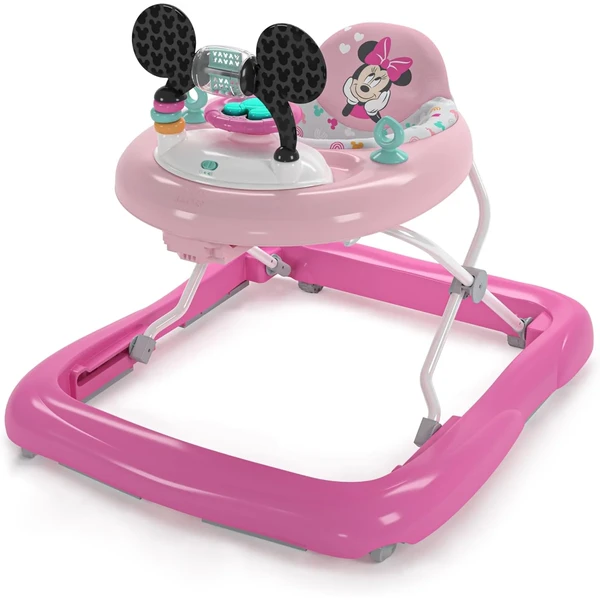
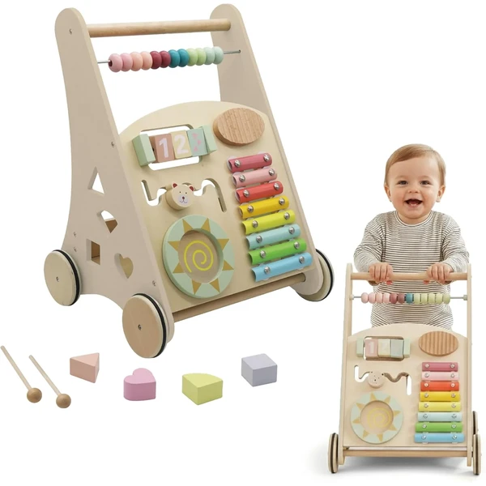

Andador Giggling Safari Bright Starts
Un andador plegable con temática de safari, asiento alto y un panel de ábaco con actividades. La altura se ajusta en tres posiciones para acompañar al bebé mientras aprende a caminar.
⭐ ¿Por qué nos gusta?
- ✔ Asiento extraíble y lavable a máquina.
- ✔ Tres posiciones de altura ajustables.
- ✔ Estructura plegable, fácil de guardar.
💬 Lo que más destacan las familias
Muchos padres coinciden en que el panel de actividades mantiene entretenido al bebé incluso antes de dar los primeros pasos, sujetándose de pie. También gusta que el asiento se pueda quitar y lavar sin complicaciones.
Ver en Amazon

Cebra parlanchina Primeros Pasos Fisher-Price
Un andador correpasillos con forma de cebra que combina un modo de juego sentado y otro para caminar. Sus botones activan canciones y frases que acompañan los primeros pasos.
⭐ ¿Por qué nos gusta?
- ✔ Dos modos de juego: sentado y caminando.
- ✔ Asa fácil de sujetar y base con ruedas.
- ✔ Canciones y frases que estimulan el lenguaje.
💬 Lo que más destacan las familias
Una de las cosas más comentadas es que sirve primero como juguete de suelo y después como apoyo para caminar, así que dura más que un andador normal. A los bebés les llaman la atención las canciones y frases, que repiten con gusto según van creciendo.
Ver en Amazon

Andador Explorer Bebeconfort
Un andador con tres alturas regulables, base antivuelco y un panel de actividades con doce melodías. Pensado para acompañar al bebé desde que empieza a sostenerse hasta que da sus primeros pasos.
⭐ ¿Por qué nos gusta?
- ✔ Tres alturas regulables para crecer con el bebé.
- ✔ Base antivuelco con ruedas pivotantes.
- ✔ Panel de actividades con doce melodías.
💬 Lo que más destacan las familias
Los compradores valoran especialmente la sensación de estabilidad al empujarlo, incluso cuando el bebé se apoya con fuerza. El panel de melodías también gusta porque da un motivo extra para seguir practicando los pasos.
Ver en Amazon

Andador multifuncional con panel de juego
Un andador con asas ajustables en altura y un panel de juego extraíble con luces y botones. Las ruedas traseras regulables permiten adaptar la resistencia a cada etapa de aprendizaje.
⭐ ¿Por qué nos gusta?
- ✔ Asas ajustables en altura.
- ✔ Panel de juego extraíble con luces.
- ✔ Ruedas traseras con resistencia regulable.
💬 Lo que más destacan las familias
Se repite bastante el comentario de que se puede ir ajustando según el bebé gana soltura, empezando con más resistencia en las ruedas y aflojándola poco a poco. El panel de luces también entretiene mientras aprende a caminar con más seguridad.
Ver en Amazon

Andador Minnie Mouse Bright Starts
Un andador 2 en 1 con la temática de Minnie Mouse y una estación de juegos desmontable con volante, espejo y cuentas giratorias. Se pliega fácilmente para guardarlo o llevarlo de viaje.
⭐ ¿Por qué nos gusta?
- ✔ Estación de juegos desmontable para llevar de viaje.
- ✔ Luces, canciones y sonidos.
- ✔ Tres posiciones de altura ajustables.
💬 Lo que más destacan las familias
Entre los comentarios más habituales aparece que la estación de juegos se puede separar y seguir usándola aunque el bebé aún no camine, lo que alarga su vida útil. También gusta la temática de Minnie Mouse, que suele captar la atención enseguida.
Ver en Amazon

Andador Montessori de madera Buddy Baby
Un carrito de madera con nueve juguetes sensoriales integrados (xilófono, espejo, engranajes, ábaco...) siguiendo el método Montessori. Pensado para bebés que ya caminan de forma más segura.
⭐ ¿Por qué nos gusta?
- ✔ Nueve juguetes sensoriales integrados.
- ✔ Diseño de madera siguiendo el método Montessori.
- ✔ Fácil de montar, con instrucciones ilustradas.
💬 Lo que más destacan las familias
Quienes lo han probado destacan el acabado en madera y la variedad de juguetes integrados, que mantienen al bebé entretenido explorando cada pieza. Conviene tener en cuenta que el fabricante lo orienta a partir de los 12 meses, así que da más juego hacia el final de esta franja.
Ver en Amazon